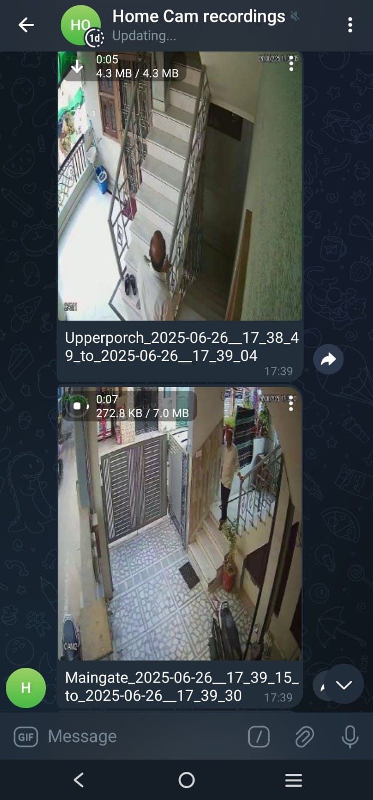

A Smart Eye on Your Home: The DIY Security Camera Project
June 26, 2025Table of Contents
- Introduction
- How It Works: A Detailed Look
- Core algorithm
- Setting up and Installation
- Results
- References
Introduction
This project provides a powerful, Python-based local surveillance solution. It's designed for anyone interested in enhancing their home security with a system that is both private and highly customizable. Unlike many commercial options, this solution keeps all your data on your local server. The system connects to your existing DVR camera feeds, intelligently detects motion, records the event, and sends an instant alert with the video clip directly to your Telegram.
How It Works: A Detailed Look
The system is a sophisticated suite of scripts working in concert to provide 24/7 monitoring. Here's a breakdown of each component's role:
-
Core Engine: `fetch_save_stream.py`
This is the heart of the operation. It connects to the RTSP feed of a CP-PLUS DVR. It continuously fetches the video stream, performs real-time motion analysis, and upon detecting significant movement, it saves a recording and triggers an alert.
-
Alert System: `telegram_bot.py`
This script acts as the bridge between your security system and you. When a recording is saved, this module is called to send the video file directly to a pre-configured Telegram chat. It handles the interaction with the Telegram Bot API to post the video and a caption.
-
Storage Guardian: `file_manager.py`
To prevent the system from running out of disk space, this utility script acts as a janitor. It periodically scans the recordings directory and automatically deletes video files and their corresponding database entries if they are older than three days. It also cleans up old log files to maintain system health.
-
The Watchdog: `script_mon.py`
This script ensures the system's reliability. It runs in the background and continuously checks if the main processes (`fetch_save_stream.py`, `file_manager.py`) are running. If it finds that a script has stopped, it automatically restarts it, guaranteeing uninterrupted surveillance.
-
Configuration & Utilities
A set of helper scripts make the system robust and easy to manage:
common_utils.py: A central library for shared functions like parsing camera credentials, fetching API keys, getting motion detection parameters for day/night, and retrieving the polygon coordinates for cropping.crop_image.py: An interactive tool that allows you to draw a polygon or rectangle over a sample image from your camera feed. It then prints the exact coordinates of this area of interest, which you can add to your configuration to ensure motion is only detected in specific zones (e.g., a door, a window).py_logging.py: A custom logging module that formats and manages log output, making it easier to debug issues.
Core Algorithm Deep Dive: `fetch_save_stream.py`
The motion detection in fetch_save_stream.py is not just a simple check; it's a multi-step algorithm designed to be both sensitive and resistant to false positives. Here is a step-by-step breakdown:
-
Initialization & Configuration Loading
When the script starts, it reads its configuration using functions from
common_utils.py. This includes:- Camera credentials and stream URL.
- The precise vertices of the polygon that defines the motion detection zone (Region of Interest).
- Separate sensitivity thresholds for day and night, as lighting conditions change drastically.
-
Defining the Region of Interest (ROI)
To focus only on important areas, a mask is created. The script uses
cv2.fillPoly()to draw the user-defined polygon (whose vertices were fetched in Step 1) onto a black mask. This mask is then used withcv2.bitwise_and()to ensure that subsequent processing steps only consider the pixels within this specific region, ignoring irrelevant movement elsewhere in the frame. -
Frame Pre-processing
The very first frame from the stream is captured and processed to become the initial "static" background reference, called
start_frame. Every subsequent frame goes through the same pre-processing pipeline:- The ROI mask from Step 2 is applied.
- The frame is converted from color to grayscale using
cv2.cvtColor(), as color information is not needed for motion detection and this simplifies the data. - A Gaussian blur (e.g.,
cv2.GaussianBlur(frame, (21, 21), 0)) is applied to smoothen the image and reduce noise, which helps prevent false alarms from minor pixel fluctuations.
-
Calculating the Difference
The processed current frame is compared to the processed previous frame (
start_frame) usingcv2.absdiff(). This function calculates the absolute difference between each pixel, resulting in an image that highlights where changes have occurred. -
Thresholding and Motion Score
The difference image is then thresholded using
cv2.threshold(). This converts the grayscale difference image into a binary image (black and white), where white pixels represent significant change. The script then calculates the total sum of all white pixels (threshold.sum()). This sum is a numerical score representing the amount of motion in the frame. -
Smart Motion Detection Logic
A single frame of motion is often not enough to trigger an alarm. The script uses a counter,
motion_alarm_cntr, to track persistent motion.- If the motion score from Step 5 exceeds the configured threshold (which changes for day/night), the
motion_alarm_cntris incremented. - If there's no significant motion, the counter is decremented.
- An alarm is triggered only when
motion_alarm_cntrsurpasses a contour threshold (cntr_threshold), ensuring the motion is sustained and not just a brief flicker.
- If the motion score from Step 5 exceeds the configured threshold (which changes for day/night), the
-
Recording and Alerting
Once motion is confirmed, the script immediately begins recording. It uses
cv2.VideoWriterto save the live, unprocessed frames into an .mp4 file. The recording continues for a predefined period (e.g., 15 seconds) after the initial trigger. When the recording is complete, the script calls the `telegram_bot.sh` shell script usingsubprocess.Popen, passing the path to the new video file and a descriptive caption as arguments. This shell script then invokes `telegram_bot.py` to send the alert.
Setting up and Installation
Setting up your own local surveillance system is straightforward.
-
Clone the repository and install dependencies
git clone https://github.com/kalpgarg/home_cam_security.git cd home_cam_security pip install -r requirements.txt -
Configure your environment
You need to set up your DVR stream URLs, Telegram Bot API key, and channel ID. These are stored securely in a file like
custom_cam_info.json. Use thecrop_image.pytool to define your motion detection zones. -
Run the main server
Launch the monitoring script, which will in turn start all other necessary components.
python script_mon.py
Results
Sample Captured Video
This is a clip captured automatically when motion was detected by one of the CCTV cameras.
Telegram Alert Screenshot
As soon as motion is detected, this recording is sent to your configured Telegram channel or group.
These real-time alerts allow you to monitor your home or premises even when you’re away—no need to check manually.
References & Further Reading
-
Project GitHub Repository
Explore the source code, fork the repository, and contribute to the project. Contributions are welcome!
-
Key OpenCV Modules Used
This project relies heavily on the OpenCV library for video processing. Understanding these core functions can help you customize the project further.
cv2.VideoCapture: Used to connect to and read frames from the camera's RTSP stream.cv2.VideoWriter: Used to save the detected motion events as .mp4 video files.cv2.cvtColor: To convert color video frames into grayscale for motion analysis.cv2.GaussianBlur: Applied to frames to reduce image noise and prevent minor fluctuations from being detected as motion.cv2.absdiff: To compute the pixel-by-pixel difference between two frames, forming the basis of motion detection.cv2.threshold: To convert the difference image into a binary image, clearly separating areas of significant change (motion) from the static background.cv2.fillPoly: To create a specific region-of-interest mask, ensuring motion detection is confined to user-defined areas like doorways or windows.cv2.bitwise_and: Used to apply the region-of-interest mask to the video frames, effectively ignoring all motion outside the defined polygon.